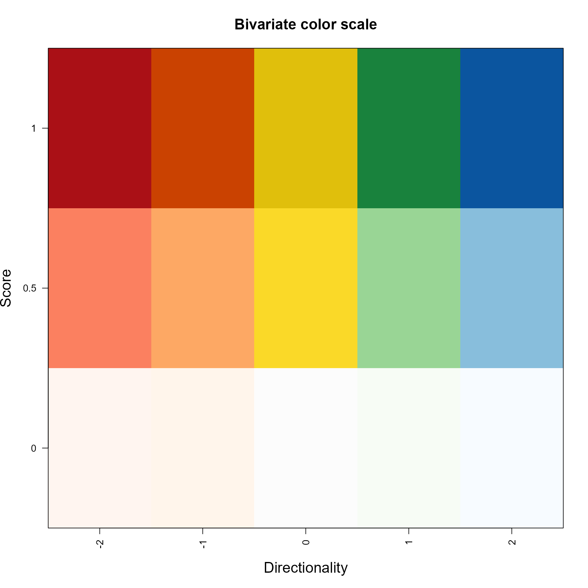
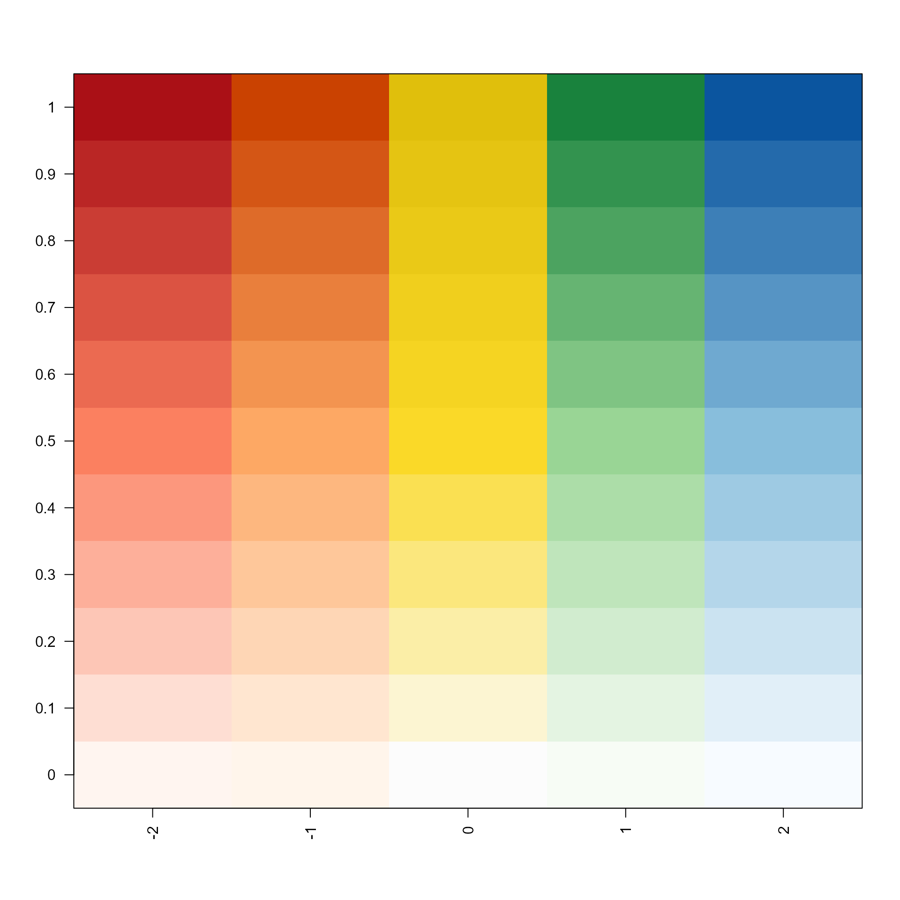
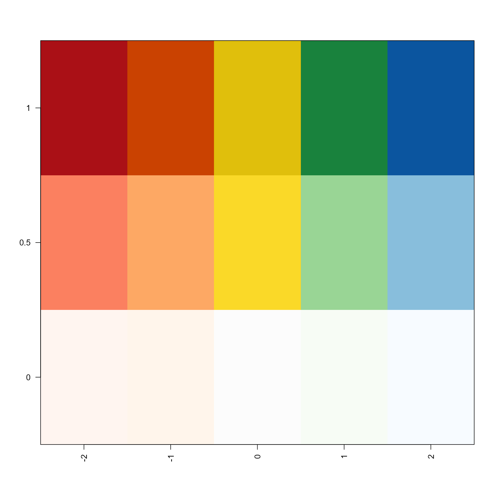
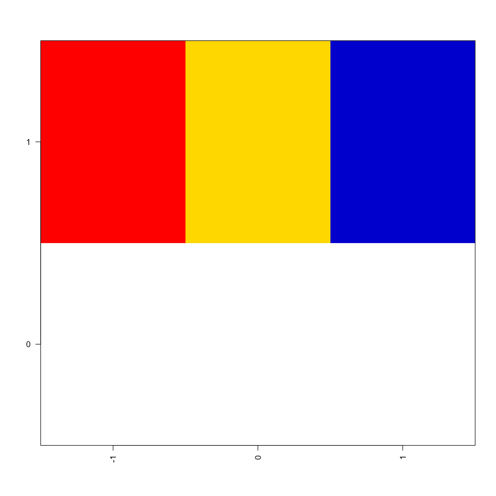
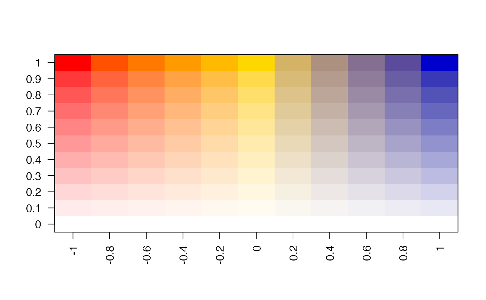

Color ramp for bivariate colors, using x- and y-axis input values to apply colors.
Arguments
- column_breaks
numericvector of column breaks.- row_breaks
numericvector of row breaks.- mcolor
charactermatrix of R colors, with dimensions equal to the number ofcolumn_breaksandrow_breaks.- na_color
charactercolor used for NA values.- return_rgb
logicaldefault FALSE, whether the color function should return RGB color format, orcharacterhex colors.- transparency
numericdefault 0, passed tocirclize::colorRamp2().- space
characterstring with color space, default 'sRGB'.- verbose
logicalwhether to print verbose output.- ...
additional arguments are ignored.
Value
function that takes input with arguments:
x: numeric x-axis value. It only accepts one value.
return_rgb:
logicalwhether to return RGB colormax_value: maximum value, ignored
y: numeric y-axis value. It only accepts one value.
...: additional arguments are ignored
Details
This function is intentionally similar to
circlize::colorRamp2(), in that it defines a specific color
to a specific numeric value. In this case, it uses
two numeric input values, intended to be x- and y-axis
values, columns and rows, respectively.
The default condition it to use divergent colors as x-axis (columns), and a white-to-dark gradient as y-axis (rows). In this way the y-axis represents P-value significance, and x-axis represents direction, with -2 (down), 0 (no direction), and +2 (up).
This function is not intended to be particularly user-friendly, it simply takes column_breaks, row_breaks, and a matrix of colors, and returns a color function that generates one color for each x,y value provided.
See also
Other jam utility functions:
ashape(),
avg_angles(),
avg_colors_by_list(),
cell_fun_bivariate(),
col_pvdir_xf(),
collapse_mem_clusters(),
curateIPAcolnames(),
deconcat_df2(),
display_colorRamp2D(),
enrichList2geneHitList(),
find_colname(),
find_enrich_colnames(),
get_hull_data(),
get_igraph_layout(),
gsubs_remove(),
handle_igraph_param_list(),
isColorBlank(),
make_legend_bivariate(),
make_point_hull(),
mem_find_overlap(),
order_colors(),
rank_mem_clusters(),
rotate_coordinates(),
summarize_node_spacing(),
with_ht_opts(),
xyAngle()
Examples
mcolor <- cbind(
jamba::getColorRamp("Reds", n=3, trimRamp=c(0, 2)),
jamba::getColorRamp("Oranges", n=3, trimRamp=c(0, 3)),
jamba::getColorRamp("gold", n=3, trimRamp=c(0, 3)),
jamba::getColorRamp("Greens", n=3, trimRamp=c(0, 3)),
jamba::getColorRamp("Blues", n=3, trimRamp=c(0, 2))
)
row_breaks <- c(0, 0.5, 1);
column_breaks <- c(-2, -1, 0, 1, 2);
rownames(mcolor) <- row_breaks;
colnames(mcolor) <- column_breaks;
jamba::imageByColors(mcolor);
title(
cex.main=1.5,
cex.lab=1.5,
main="Bivariate color scale",
xlab="Directionality",
ylab="Score");

col_fun <- colorRamp2D(
column_breaks=column_breaks,
row_breaks=row_breaks,
mcolor=mcolor)
display_colorRamp2D(col_fun, pretty.n=c(8, 5));

display_colorRamp2D(col_fun, pretty.n=NULL);

mcolor1 <- matrix(ncol=3,
c("white", "red",
"white", "gold",
"white", "blue3"));
row_breaks1 <- c(0, 1);
column_breaks1 <- c(-1, 0, 1);
rownames(mcolor1) <- row_breaks1;
colnames(mcolor1) <- column_breaks1;
jamba::imageByColors(mcolor1);

col_fun1 <- colorRamp2D(column_breaks=column_breaks1,
row_breaks=row_breaks1,
space="LUV",
mcolor=mcolor1)
display_colorRamp2D(col_fun1);
